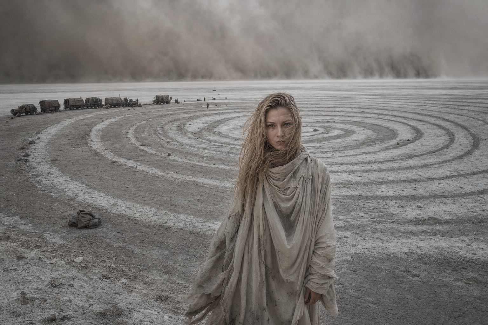

01Кадр восстановлен / 2048Источник: камера «Север-9»
Спираль жажды
Она оставила в пыли геоглиф и три стрелки. Первая привела караван к воде. Вторая — к лекарствам. Люди поверили правилам. Третья двенадцать часов водила их по кругу вокруг пересохшей цистерны, пока Лилия удерживала пылевую стену и не позволяла свернуть.
«Мы слышали, как она смеялась в радиопомехах. Не громко. Будто человек вспомнил что-то приятное». Выжили четверо из двадцати трёх.